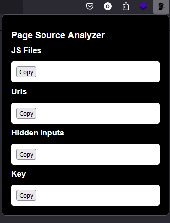

Page-source-analyzer-add-ons
Page Source Analyzer Firefox add-on that caters to developers and web security researcher and bughunters. It facilitates in-depth analysis and inspection of HTML pages to uncover JavaScript files, URLs, hidden inputs, keys.
Downanime
Script to collect links of ep from witanime.com